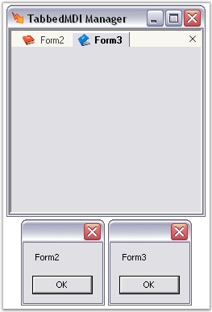
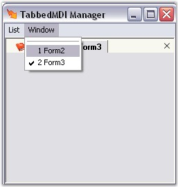
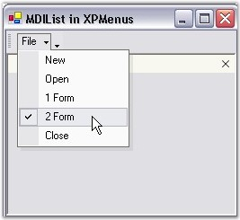

By using the TabbedMDIManager framework, you can make your MDI container form's MDIChildren property obsolete. The value returned by this property will not be an accurate reflection of the MDIChildren. You should instead use the TabbedMDIManager's MDIChildren property, to get a list of the MDIChild forms.
|
TabbedMDIManager Property |
Description |
|
MDIChildren |
Returns the MDIChild of the associated MDIParent. |
|
MDIParent |
Returns the current MDIParent form managed. |
You can retrieve the MDIChild forms using the below code.
|
[C#]
private void Form1_Load(object sender, System.EventArgs e) { Form[] mdiFormsList = this.tabbedMdiManager.MdiChildren; for(int i=0;i<mdiFormsList.Length;i++) { MessageBox.Show(mdiFormsList[i].Text); } } |
|
[VB.NET]
Private Sub Form1_Load(ByVal sender As Object, ByVal e As System.EventArgs) Handles MyBase.Load Dim mdiFormsList As Form() = Me.tabbedMdiManager.MdiChildren Dim i As Integer = 0 Do While i < mdiFormsList.Length MessageBox.Show(mdiFormsList(i).Text) i += 1 Loop End Sub |

Figure 1095: TabbedMDIManager displaying the list of Child Forms
· MDI List in Menus
If you want an MDI List in your menus, use the TabbedMDIManager's MDIListMenuItem property. This will duplicate the exact functionality that the MDIList property of the MenuItem class provides. This menu item will then be managed by the TabbedMDIManager, even when it is not attached to your container form.
Also you can add an MDI List to your toolstrip menus, using the TabbedMDIManager's MDIListToolStripItem property. This will duplicate the exact functionality that the MDI List property of the ToolStripItem class provides.
|
TabbedMDIManager Property |
Description |
|
MDIListMenuItem |
Specifies the menu item to which the MDIChildren list should be added. |
|
MDIListToolStripItem |
Specifies the toolstrip menu item to which the MDIChildren list should be added. |
|
[C#]
private MenuItem miWindow; private void Form1_Load(object sender, System.EventArgs e) { // Add a menu item to the main menu. this.miWindow = this.mainMenu1.MenuItems.Add("Window"); // Let the TabbedMDIManager insert the MDIChild windows list. this.tb.MdiListMenuItem = miWindow; } |
|
[VB.NET]
Private miWindow As MenuItem Private Sub Form1_Load(ByVal sender As Object, ByVal e As System.EventArgs) Handles MyBase.Load ' Add a menu item to the main menu. Me.miWindow = Me.mainMenu1.MenuItems.Add("Window") ' Let the TabbedMDIManager insert the MDIChild windows list. Me.tb.MdiListMenuItem = miWindow End Sub |

Figure 1096: TabbedMDIManager with MDI List in Menus
· MDI List in XP Menus
When using XP Menus in Essential Tools as the MDIContainer's Main Menu, this property need not be set. Instead use the MDIListBarItem in XP Menus to represent the MDIChild windows list.
The XP Menus framework automatically handles the case when the MDIChild windows layout is managed by the TabbedMDIManager.

Figure 1097: MDI List in XP Menus
See Also